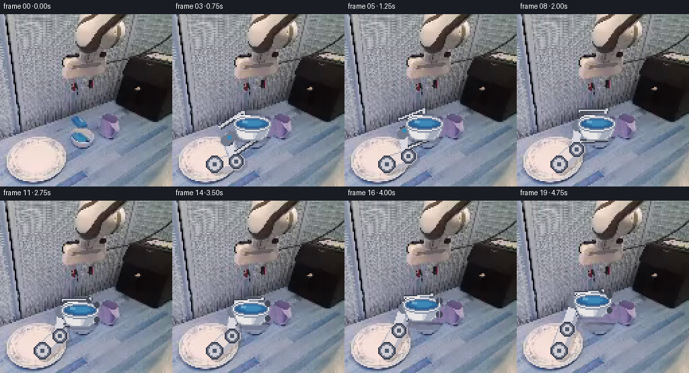
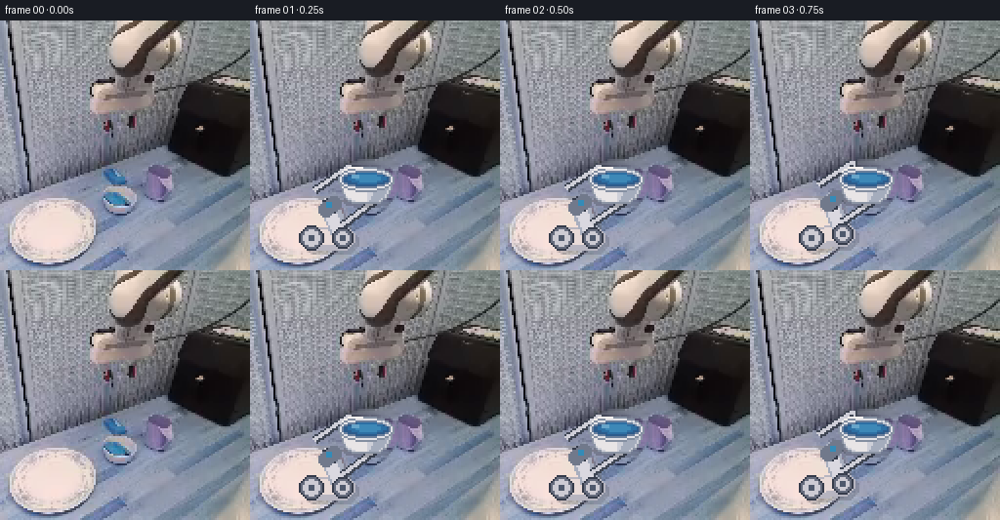
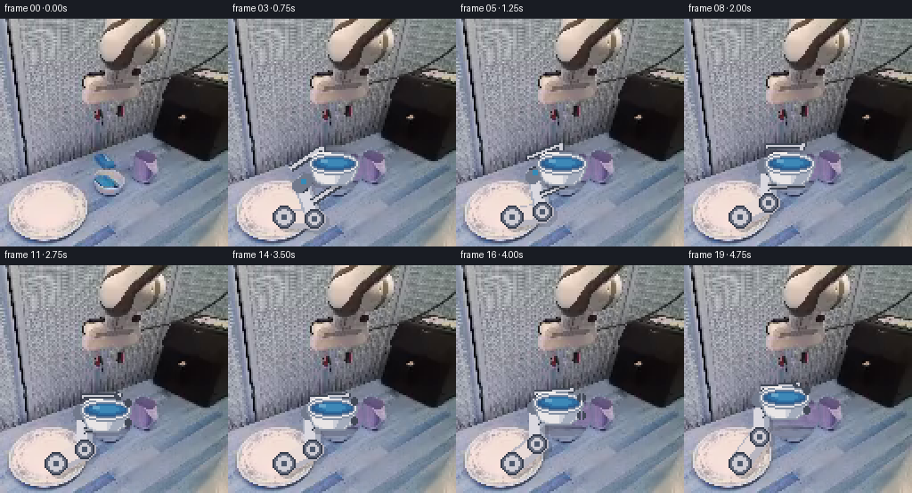
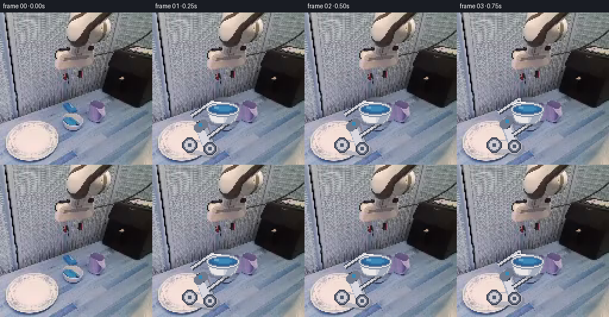

CODING AGENTS AS PIXEL WORLD MODELS
traex/GPT-5.6-Sol · common50_0043
点击播放 · 原生 RGB 像素
逐轮保存的候选
回放视频、检查图与代码变化。
每份候选均可单独播放。实际图片检查记录在下方工具轨迹中。
候选 01播放与检查图
点击播放 · 原生 RGB 像素


展开代码变化
--- 上一保存版本
+++ 本次保存版本
@@ -0,0 +1,196 @@
+from pathlib import Path
+import math
+import numpy as np
+from PIL import Image, ImageDraw
+import artifact_io
+
+CASE_DIR = Path(__file__).resolve().parent
+
+
+def smoothstep(x):
+ x = max(0.0, min(1.0, float(x)))
+ return x*x*(3.0-2.0*x)
+
+
+def capsule(draw, a, b, width, fill):
+ """A rigid, round-ended link, drawn in the 128 px working image."""
+ a = tuple(float(v) for v in a); b = tuple(float(v) for v in b)
+ draw.line([a, b], fill=fill, width=max(1, int(round(width))))
+ r = width/2
+ for p in (a, b):
+ draw.ellipse((p[0]-r, p[1]-r, p[0]+r, p[1]+r), fill=fill)
+
+
+def alpha_composite_rgb(base, overlay, alpha):
+ ov = np.asarray(overlay, dtype=np.float32)
+ a = np.asarray(alpha, dtype=np.float32)[..., None] / 255.0
+ return np.clip(np.asarray(base, dtype=np.float32)*(1-a) + ov*a, 0, 255).astype(np.uint8)
+
+
+def remove_target(src):
+ """Make a stable local work-surface plate underneath the movable bowl."""
+ out = src.copy()
+ yy, xx = np.mgrid[0:128, 0:128]
+ # The bowl occupies this compact region in the supplied frame.
+ mask = (((xx-59.0)/16.5)**2 + ((yy-84.0)/13.5)**2) <= 1.0
+ # Horizontal interpolation from unoccluded pixels on both sides. A little
+ # texture from the right-hand work surface prevents a flat painted hole.
+ for y in range(69, 99):
+ ids = np.where(mask[y])[0]
+ if not len(ids):
+ continue
+ lo, hi = ids[0], ids[-1]
+ left = src[y, max(0, lo-3)].astype(np.float32)
+ right = src[y, min(127, hi+4)].astype(np.float32)
+ for x in ids:
+ t = (x-lo+1.0)/(hi-lo+2.0)
+ col = left*(1-t) + right*t
+ # Reuse only tiny, local luminance detail from adjacent surface.
+ tx = min(127, hi+4 + (x-lo) % 10)
+ detail = float(src[y, tx].mean() - src[y, min(127, hi+4)].mean()) * .20
+ out[y, x] = np.clip(col + detail, 0, 255)
+ # Feather a one-pixel boundary numerically.
+ edge = mask & ~(np.roll(mask,1,0)&np.roll(mask,-1,0)&np.roll(mask,1,1)&np.roll(mask,-1,1))
+ for y,x in zip(*np.where(edge)):
+ vals=[]
+ for dy,dx in ((-1,0),(1,0),(0,-1),(0,1)):
+ ny,nx=y+dy,x+dx
+ if 0<=ny<128 and 0<=nx<128:
+ vals.append(out[ny,nx].astype(np.int16))
+ out[y,x]=np.mean(vals,axis=0).astype(np.uint8)
+ return out
+
+
+def ik_elbow(base, wrist, l1=17.0, l2=18.0):
+ """Two-link planar IK; positive branch keeps the elbow below the forearm."""
+ b=np.asarray(base,dtype=float); w=np.asarray(wrist,dtype=float)
+ v=w-b; d=float(np.linalg.norm(v)); d=max(abs(l1-l2)+.01,min(l1+l2-.01,d))
+ u=v/(np.linalg.norm(v)+1e-8)
+ a=(l1*l1-l2*l2+d*d)/(2*d)
+ h=math.sqrt(max(0.0,l1*l1-a*a))
+ p=b+a*u
+ perp=np.array([-u[1],u[0]])
+ return p+h*perp
+
+
+def draw_bowl(arr, center, lift):
+ """Small rigid white bowl, preserving the requested clearly blue contents."""
+ cx,cy=center
+ im=Image.fromarray(arr)
+ # Soft contact shadow stays on the work surface and separates as bowl lifts.
+ sh=Image.new('RGB',(128,128),(0,0,0)); sa=Image.new('L',(128,128),0)
+ sd=ImageDraw.Draw(sh); ad=ImageDraw.Draw(sa)
+ shadow_y = 91.0 + 1.5*lift
+ shadow_alpha = int(62-25*lift)
+ sd.ellipse((cx-12+3*lift,shadow_y-2,cx+13+3*lift,shadow_y+4),fill=(25,28,38))
+ ad.ellipse((cx-12+3*lift,shadow_y-2,cx+13+3*lift,shadow_y+4),fill=shadow_alpha)
+ arr=alpha_composite_rgb(im,sh,sa)
+ im=Image.fromarray(arr); d=ImageDraw.Draw(im)
+ # Bowl body: fixed silhouette and pixel-scale shading, no deformation.
+ body=[(cx-14,cy),(cx-11,cy+8),(cx-7,cy+11),(cx+7,cy+11),
+ (cx+11,cy+8),(cx+14,cy)]
+ d.polygon(body,fill=(205,207,216),outline=(139,148,164))
+ d.polygon([(cx-12,cy+3),(cx-9,cy+8),(cx-5,cy+10),(cx,cy+10),
+ (cx,cy+1)],fill=(232,229,230))
+ d.polygon([(cx+7,cy+1),(cx+12,cy+1),(cx+9,cy+8),(cx+6,cy+10),
+ (cx+2,cy+10)],fill=(164,172,188))
+ # Bright rigid rim and recessed blue contents.
+ d.ellipse((cx-14,cy-7,cx+14,cy+5),fill=(226,226,231),outline=(132,143,161),width=1)
+ d.ellipse((cx-12,cy-5,cx+12,cy+3),fill=(45,91,139),outline=(105,126,155),width=1)
+ d.ellipse((cx-9,cy-4,cx+10,cy+1),fill=(45,111,163))
+ d.ellipse((cx-5,cy-3,cx+7,cy),fill=(61,136,183))
+ d.rectangle((cx-7,cy-3,cx-4,cy-2),fill=(103,165,202))
+ # Two white glints make the lip legible against the cool-gray bench.
+ d.line([(cx-12,cy-5),(cx-8,cy-7),(cx-2,cy-7)],fill=(248,242,239),width=1)
+ d.line([(cx+8,cy-5),(cx+12,cy-3)],fill=(190,198,210),width=1)
+ return np.asarray(im)
+
+
+def draw_robot(arr, base, wrist, bowl_center, openness, lift):
+ """Render a stable two-link embodied arm and parallel-jaw gripper."""
+ elbow=ik_elbow(base,wrist)
+ im=Image.fromarray(arr)
+ # Grounded arm shadow, offset consistently with scene lighting.
+ sh=Image.new('RGB',(128,128),(0,0,0)); sa=Image.new('L',(128,128),0)
+ sd=ImageDraw.Draw(sh); ad=ImageDraw.Draw(sa)
+ capsule(sd,np.asarray(base)+(2,2),elbow+(2,2),12,(35,35,44)); capsule(ad,np.asarray(base)+(2,2),elbow+(2,2),12,45)
+ capsule(sd,elbow+(2,2),np.asarray(wrist)+(2,2),9,(35,35,44)); capsule(ad,elbow+(2,2),np.asarray(wrist)+(2,2),9,45)
+ arr=alpha_composite_rgb(im,sh,sa)
+ im=Image.fromarray(arr); d=ImageDraw.Draw(im)
+ # Upper arm and forearm retain constant widths and lengths.
+ capsule(d,base,elbow,12,(183,181,192))
+ capsule(d,np.asarray(base)+(-1,-1),elbow+(-1,-1),8,(233,219,216))
+ capsule(d,elbow,wrist,9,(168,174,190))
+ capsule(d,elbow+(-.7,-.7),np.asarray(wrist)+(-.7,-.7),6,(218,216,224))
+ # Mechanical joints and fixed fasteners.
+ for p,r in ((base,6),(elbow,5),(wrist,4)):
+ d.ellipse((p[0]-r,p[1]-r,p[0]+r,p[1]+r),fill=(102,108,125),outline=(53,59,74),width=1)
+ d.ellipse((p[0]-r+2,p[1]-r+2,p[0]+r-2,p[1]+r-2),fill=(205,203,211))
+ d.rectangle((p[0]-1,p[1]-1,p[0]+1,p[1]+1),fill=(79,89,108))
+ # Wrist-to-bowl frame; gripper is a single rigid assembly.
+ w=np.asarray(wrist,dtype=float); c=np.asarray(bowl_center,dtype=float)
+ u=c-w; u=u/(np.linalg.norm(u)+1e-8); v=np.array([-u[1],u[0]])
+ palm0=w-2*u; palm1=w+3*u
+ capsule(d,palm0,palm1,7,(113,121,139))
+ # Open jaws close symmetrically around the rim.
+ halfgap=8.0+3.2*openness
+ length=20.0
+ for sign in (-1,1):
+ q0=w + sign*halfgap*v
+ q1=w + length*u + sign*halfgap*v
+ hook=q1-sign*3.2*v-1.2*u
+ # dark edge, then pale rigid finger
+ d.line([tuple(q0),tuple(q1),tuple(hook)],fill=(62,69,83),width=4,joint='curve')
+ d.line([tuple(q0),tuple(q1),tuple(hook)],fill=(207,207,216),width=2,joint='curve')
+ # contact pad only reaches bowl after closing
+ if openness < .45:
+ d.ellipse((hook[0]-2,hook[1]-2,hook[0]+2,hook[1]+2),fill=(68,75,89))
+ # Small blue status lamp on the gripper, stable rather than flickering.
+ lamp=w+1.0*u-1.0*v
+ d.rectangle((lamp[0]-1,lamp[1]-1,lamp[0]+1,lamp[1]+1),fill=(52,139,183))
+ return np.asarray(im)
+
+
+def generate():
+ first=np.asarray(Image.open(CASE_DIR/'first_frame.png').convert('RGB'),dtype=np.uint8)
+ # Source is exactly a 2x nearest-neighbour raster. Work in its native 128 grid.
+ src=first[::2,::2].copy()
+ clean=remove_target(src)
+ frames=[first.copy()]
+ base=np.array([31.0,111.0])
+ c0=np.array([59.0,82.0])
+ for i in range(1,20):
+ # Approach over two seconds, close for 1.25 seconds, then lift securely.
+ approach=smoothstep((i-1)/7.0)
+ close=smoothstep((i-8)/5.0)
+ lift=smoothstep((i-13)/6.0)
+ center=c0+np.array([-3.0*lift,-7.0*lift])
+ w_start=np.array([40.5,95.5])
+ w_grasp=c0+np.array([-12.0,1.0])
+ wrist=w_start*(1-approach)+w_grasp*approach
+ if lift>0:
+ wrist=center+np.array([-12.0,1.0])
+ # Static clean workspace. Bowl remains in place until grasp is closed.
+ frame=clean.copy()
+ # Arm goes behind the bowl; fingers are redrawn afterward to visibly clasp it.
+ # First draw arm assembly, then bowl, then repeat only gripper atop the bowl by
+ # placing the complete arm first and using contact pads as front detail.
+ frame=draw_robot(frame,base,wrist,center,1.0-close,lift)
+ frame=draw_bowl(frame,center,lift)
+ # Add foreground contact pads at the near rim after closure.
+ if close>0.45:
+ pim=Image.fromarray(frame); pd=ImageDraw.Draw(pim)
+ padcol=(65,72,86)
+ pd.rounded_rectangle((center[0]+11,center[1]-7,center[0]+14,center[1]-3),radius=1,fill=padcol)
+ pd.rounded_rectangle((center[0]+11,center[1]+4,center[0]+14,center[1]+8),radius=1,fill=padcol)
+ frame=np.asarray(pim)
+ full=np.repeat(np.repeat(frame,2,axis=0),2,axis=1)
+ frames.append(full.astype(np.uint8))
+ frames=np.stack(frames).astype(np.uint8)
+ # Contract guarantee: supplied first frame is untouched byte-for-byte in RGB.
+ frames[0]=first
+ artifact_io.save(frames,CASE_DIR)
+
+
+if __name__=='__main__':
+ generate()
候选 02播放与检查图
点击播放 · 原生 RGB 像素


展开代码变化
--- 上一保存版本
+++ 本次保存版本
@@ -61,7 +61,7 @@
return out
-def ik_elbow(base, wrist, l1=17.0, l2=18.0):
+def ik_elbow(base, wrist, l1=18.0, l2=21.0):
"""Two-link planar IK; positive branch keeps the elbow below the forearm."""
b=np.asarray(base,dtype=float); w=np.asarray(wrist,dtype=float)
v=w-b; d=float(np.linalg.norm(v)); d=max(abs(l1-l2)+.01,min(l1+l2-.01,d))
可观测工具轨迹
实际执行的命令与返回图片。
命令 1exit 0
/bin/bash -lc "cat GENERATION_RULES.md && printf '\\n---PROMPT---\\n' && cat prompt.txt"
命令 2exit 127
/bin/bash -lc "find . -maxdepth 2 -type f -printf '%p %s bytes\\n' | sort && file first_frame.png"
命令 3exit 0
/bin/bash -lc "cat task_spec.json; sed -n '1,240p' artifact_io.py"
命令 4exit 0
/bin/bash -lc "python - <<'PY'
from PIL import Image
import numpy as np
im=np.array(Image.open('first_frame.png').convert('RGB'))
print(im.shape,im.dtype,im.min((0,1)), im.max((0,1)),im.mean((0,1)), im.std((0,1)))
# quant colors
q=(im//16)*16
u,c=np.unique(q.reshape(-1,3),axis=0,return_counts=True)
for i in np.argsort(c)[-30:][::-1]:print(c[i],u[i])
PY"命令 5exit 0
/bin/bash -lc "python - <<'PY'
from PIL import Image
import numpy as np
im=np.array(Image.open('first_frame.png').convert('RGB'))
# means blocks 16
for y in range(0,256,16):
print('ROW',y)
for x in range(0,256,16):
a=im[y:y+16,x:x+16].mean((0,1)).astype(int)
print('%02x%02x%02x'%tuple(a),end=' ')
print()
PY"命令 6exit 2
/bin/bash -lc "cat > /tmp/an.py <<'PY'
import cv2,numpy as np
from PIL import Image
im=np.array(Image.open('first_frame.png').convert('RGB'))
hsv=cv2.cvtColor(im,cv2.COLOR_RGB2HSV)
conds={
'blue':(im[:,:,2]>im[:,:,0]+25)&(im[:,:,2]>im[:,:,1]+10)&(im[:,:,2]>90),
'brightblue':(im[:,:,2]>im[:,:,0]+40)&(im[:,:,2]>im[:,:,1]+20)&(im[:,:,2]>130),
'white':(im.min(2)>180)&(im.max(2)-im.min(2)<35),
'bright':im.mean(2)>190,
'red':(im[:,:,0]>im[:,:,1]+25)&(im[:,:,0]>im[:,:,2]+10),
'dark':im.mean(2)<35,
'sat':hsv[:,:,1]>100
}
for n,m in conds.items():
ys,xs=np.where(m);print('\\n',n,len(xs),'bbox', (xs.min(),ys.min(),xs.max(),ys.max()) if len(xs) else None,'cent', (xs.mean(),ys.mean()) if len(xs) else None)
mm=(m.astype('uint8')*255)
q,N,stats,cents=cv2.connectedComponentsWithStats(mm,8)
ids=np.argsort(stats[1:,4])[-10:][::-1]+1
for i in ids:
x,y,w,h,a=stats[i]; print(' ',a,(x,y,w,h),tuple(np.round(cents[i],1)))
# mean in 32 blocks with hue descriptive
for y in range(0,256,32):
for x in range(0,256,32):
a=im[y:y+32,x:x+32]; h=hsv[y:y+32,x:x+32]
print((x,y),np.round(a.mean((0,1))).astype(int), 'std',int(a.std()),'B',int(((a[:,:,2]>a[:,:,0]+25)&(a[:,:,2]>a[:,:,1]+10)).sum()),'W',int(((a.min(2)>180)&(a.max(2)-a.min(2)<35)).sum()))
print()
PY
python /tmp/an.py"命令 7exit 0
/bin/bash -lc "cat > .tmp/an.py <<'PY'
import cv2,numpy as np
from PIL import Image
im=np.array(Image.open('first_frame.png').convert('RGB'))
hsv=cv2.cvtColor(im,cv2.COLOR_RGB2HSV)
conds={
'blue':(im[:,:,2]>im[:,:,0]+25)&(im[:,:,2]>im[:,:,1]+10)&(im[:,:,2]>90),
'brightblue':(im[:,:,2]>im[:,:,0]+40)&(im[:,:,2]>im[:,:,1]+20)&(im[:,:,2]>130),
'white':(im.min(2)>180)&(im.max(2)-im.min(2)<35),
'bright':im.mean(2)>190,
'red':(im[:,:,0]>im[:,:,1]+25)&(im[:,:,0]>im[:,:,2]+10),
'dark':im.mean(2)<35,
'sat':hsv[:,:,1]>100
}
for n,m in conds.items():
ys,xs=np.where(m);print('\\n',n,len(xs),'bbox', (xs.min(),ys.min(),xs.max(),ys.max()) if len(xs) else None,'cent', (xs.mean(),ys.mean()) if len(xs) else None)
mm=(m.astype('uint8')*255)
q,N,stats,cents=cv2.connectedComponentsWithStats(mm,8)
ids=np.argsort(stats[1:,4])[-10:][::-1]+1
for i in ids:
x,y,w,h,a=stats[i]; print(' ',a,(x,y,w,h),tuple(np.round(cents[i],1)))
for y in range(0,256,32):
for x in range(0,256,32):
a=im[y:y+32,x:x+32]
print((x,y),np.round(a.mean((0,1))).astype(int), 'std',int(a.std()),'B',int(((a[:,:,2]>a[:,:,0]+25)&(a[:,:,2]>a[:,:,1]+10)).sum()),'W',int(((a.min(2)>180)&(a.max(2)-a.min(2)<35)).sum()))
print()
PY
python .tmp/an.py"命令 8exit 0
/bin/bash -lc "python - <<'PY'
from PIL import Image
import numpy as np
x=np.array(Image.open('first_frame.png'))
print('2x const',np.mean((x[::2,::2]==x[1::2,::2]).all(2)),np.mean((x[::2,::2]==x[::2,1::2]).all(2)))
print('unique',len(np.unique(x.reshape(-1,3),axis=0)))
PY"命令 9exit 0
/bin/bash -lc "python - <<'PY'
from PIL import Image
import numpy as np
x=np.array(Image.open('first_frame.png').convert('RGB'))[::4,::4]
for row in x:
s=''
for r,g,b in row:
mx=max(r,g,b); mn=min(r,g,b); q=(int(r)+int(g)+int(b))/3
if b>r+35 and b>g+16: c='B' if q>100 else 'b'
elif b>r+18 and b>g+8: c='c' if q>100 else 'd'
elif r>b+28 and r>g+16:c='R' if q>100 else 'r'
elif r>b+16:c='p' if q>120 else 'q'
elif q<25:c='#'
elif q<50:c='K'
elif q<75:c='D'
elif q<100:c='m'
elif q<125:c='g'
elif q<150:c='o'
elif q<175:c='l'
elif q<200:c='L'
elif q<225:c='W'
else:c='@'
s+=c
print(s)
PY"命令 10exit 0
/bin/bash -lc "python - <<'PY'
from PIL import Image
import numpy as np
im=np.array(Image.open('first_frame.png').convert('RGB'))[::2,::2]
# print 4x4 block means native around x35-90 y60-110 (orig 70-180 x 120-220) with dominant brightness/hue and coordinates
for y in range(60,111,2):
s=''
for x in range(35,96,2):
a=im[y:y+2,x:x+2].mean((0,1));r,g,b=map(int,a); q=(r+g+b)/3
if b>r+35 and b>g+16:c='B'
elif b>r+18 and b>g+8:c='c'
elif r>b+28 and r>g+16:c='R'
elif r>b+16:c='p'
elif q<25:c='#'
elif q<50:c='K'
elif q<75:c='D'
elif q<100:c='m'
elif q<125:c='g'
elif q<150:c='o'
elif q<175:c='l'
elif q<200:c='L'
elif q<225:c='W'
else:c='@'
s+=c
print(f'{y*2:3}',s)
print(' x', ''.join(str((x*2)//10%10) for x in range(35,96,2)))
print(' x', ''.join(str((x*2)%10) for x in range(35,96,2)))
PY"命令 11exit 0
/bin/bash -lc "python - <<'PY'
import numpy as np, cv2
from PIL import Image
im=np.array(Image.open('first_frame.png').convert('RGB'))
for y in range(130,256,4):
print(y,end=' ')
for name,m in [('W',(im.min(2)>180)&(im.max(2)-im.min(2)<35)),('S',(im.mean(2)>175)),('B',(im[:,:,2]>im[:,:,0]+35)&(im[:,:,2]>im[:,:,1]+16)),('U',(im[:,:,2]>im[:,:,0]+18)&(im[:,:,2]>im[:,:,1]+8))]:
xs=np.where(m[y:y+4].any(0))[0]
# intervals
ints=[]
if len(xs):
b=np.r_[0,np.where(np.diff(xs)>1)[0]+1,len(xs)]
ints=[f'{xs[a]}-{xs[b-1]}' for a,b in zip(b[:-1],b[1:]) if b-a>=2]
print(name+':'+'/'.join(ints),end=' ')
print()
PY"命令 12exit 0
/bin/bash -lc "python - <<'PY'
from PIL import Image
import numpy as np
x=np.array(Image.open('first_frame.png'))
for name,(x0,y0,x1,y1) in {'A':(90,140,150,200),'B':(195,140,250,185),'C':(155,110,195,150),'D':(0,175,110,256)}.items():
print('\\n',name)
for y in range(y0,y1,4):
print(y,end=': ')
for xx in range(x0,x1,4):
r,g,b=map(int,x[y,xx]);print(f'{r:02x}{g:02x}{b:02x}',end=' ')
print()
PY"命令 13exit 0
/bin/bash -lc "python - <<'PY'
from PIL import Image
import numpy as np
x=np.array(Image.open('first_frame.png'))[::2,::2]
# print coords x40..80 y65..105
print(' ',''.join(str(i//10%10) for i in range(40,81)));print(' ',''.join(str(i%10) for i in range(40,81)))
for y in range(65,106):
s=''
for xx in range(40,81):
r,g,b=map(int,x[y,xx]);q=(r+g+b)/3
if b>r+45 and b>g+20:c='B'
elif b>r+25 and b>g+12:c='c'
elif b>r+12 and b>g+6:c='u'
elif r>b+28 and r>g+16:c='R'
elif r>b+14:c='p'
elif q<25:c='#'
elif q<50:c='K'
elif q<75:c='D'
elif q<100:c='m'
elif q<125:c='g'
elif q<150:c='o'
elif q<175:c='l'
elif q<200:c='L'
elif q<225:c='W'
else:c='@'
s+=c
print(f'{y:3}{s}')
PY"命令 14exit 0
/bin/bash -lc "python - <<'PY'
from PIL import Image
import numpy as np
x=np.array(Image.open('first_frame.png'))[::2,::2]
def ch(p):
r,g,b=map(int,p); q=(r+g+b)/3
if b>r+45 and b>g+20:return 'B'
if b>r+25 and b>g+12:return 'c'
if b>r+12 and b>g+6:return 'u'
if r>b+32 and r>g+15:return 'R'
if r>b+16:return 'p'
if q<25:return '#'
if q<50:return 'K'
if q<75:return 'D'
if q<100:return 'm'
if q<125:return 'g'
if q<150:return 'o'
if q<175:return 'l'
if q<200:return 'L'
if q<225:return 'W'
return '@'
# every 2 lowres = 4 orig, full scene with coords 4px
for y in range(0,128,2):
print(f'{y*2:03}', ''.join(ch(x[y,xx]) for xx in range(0,128,2)))
PY"命令 15exit 0
/bin/bash -lc "cat > generate.py <<'PY'
from pathlib import Path
import math
import numpy as np
from PIL import Image, ImageDraw
import artifact_io
CASE_DIR = Path(__file__).resolve().parent
def smoothstep(x):
x = max(0.0, min(1.0, float(x)))
return x*x*(3.0-2.0*x)
def capsule(draw, a, b, width, fill):
\"\"\"A rigid, round-ended link, drawn in the 128 px working image.\"\"\"
a = tuple(float(v) for v in a); b = tuple(float(v) for v in b)
draw.line([a, b], fill=fill, width=max(1, int(round(width))))
r = width/2
for p in (a, b):
draw.ellipse((p[0]-r, p[1]-r, p[0]+r, p[1]+r), fill=fill)
def alpha_composite_rgb(base, overlay, alpha):
ov = np.asarray(overlay, dtype=np.float32)
a = np.asarray(alpha, dtype=np.float32)[..., None] / 255.0
return np.clip(np.asarray(base, dtype=np.float32)*(1-a) + ov*a, 0, 255).astype(np.uint8)
def remove_target(src):
\"\"\"Make a stable local work-surface plate underneath the movable bowl.\"\"\"
out = src.copy()
yy, xx = np.mgrid[0:128, 0:128]
# The bowl occupies this compact region in the supplied frame.
mask = (((xx-59.0)/16.5)**2 + ((yy-84.0)/13.5)**2) <= 1.0
# Horizontal interpolation from unoccluded pixels on both sides. A little
# texture from the right-hand work surface prevents a flat painted hole.
for y in range(69, 99):
ids = np.where(mask[y])[0]
if not len(ids):
continue
lo, hi = ids[0], ids[-1]
left = src[y, max(0, lo-3)].astype(np.float32)
right = src[y, min(127, hi+4)].astype(np.float32)
for x in ids:
t = (x-lo+1.0)/(hi-lo+2.0)
col = left*(1-t) + right*t
# Reuse only tiny, local luminance detail from adjacent surface.
tx = min(127, hi+4 + (x-lo) % 10)
detail = float(src[y, tx].mean() - src[y, min(127, hi+4)].mean()) * .20
out[y, x] = np.clip(col + detail, 0, 255)
# Feather a one-pixel boundary numerically.
edge = mask & ~(np.roll(mask,1,0)&np.roll(mask,-1,0)&np.roll(mask,1,1)&np.roll(mask,-1,1))
for y,x in zip(*np.where(edge)):
vals=[]
for dy,dx in ((-1,0),(1,0),(0,-1),(0,1)):
ny,nx=y+dy,x+dx
if 0<=ny<128 and 0<=nx<128:
vals.append(out[ny,nx].astype(np.int16))
out[y,x]=np.mean(vals,axis=0).astype(np.uint8)
return out
def ik_elbow(base, wrist, l1=17.0, l2=18.0):
\"\"\"Two-link planar IK; positive branch keeps the elbow below the forearm.\"\"\"
b=np.asarray(base,dtype=float); w=np.asarray(wrist,dtype=float)
v=w-b; d=float(np.linalg.norm(v)); d=max(abs(l1-l2)+.01,min(l1+l2-.01,d))
u=v/(np.linalg.norm(v)+1e-8)
a=(l1*l1-l2*l2+d*d)/(2*d)
h=math.sqrt(max(0.0,l1*l1-a*a))
p=b+a*u
perp=np.array([-u[1],u[0]])
return p+h*perp
def draw_bowl(arr, center, lift):
\"\"\"Small rigid white bowl, preserving the requested clearly blue contents.\"\"\"
cx,cy=center
im=Image.fromarray(arr)
# Soft contact shadow stays on the work surface and separates as bowl lifts.
sh=Image.new('RGB',(128,128),(0,0,0)); sa=Image.new('L',(128,128),0)
sd=ImageDraw.Draw(sh); ad=ImageDraw.Draw(sa)
shadow_y = 91.0 + 1.5*lift
shadow_alpha = int(62-25*lift)
sd.ellipse((cx-12+3*lift,shadow_y-2,cx+13+3*lift,shadow_y+4),fill=(25,28,38))
ad.ellipse((cx-12+3*lift,shadow_y-2,cx+13+3*lift,shadow_y+4),fill=shadow_alpha)
arr=alpha_composite_rgb(im,sh,sa)
im=Image.fromarray(arr); d=ImageDraw.Draw(im)
# Bowl body: fixed silhouette and pixel-scale shading, no deformation.
body=[(cx-14,cy),(cx-11,cy+8),(cx-7,cy+11),(cx+7,cy+11),
(cx+11,cy+8),(cx+14,cy)]
d.polygon(body,fill=(205,207,216),outline=(139,148,164))
d.polygon([(cx-12,cy+3),(cx-9,cy+8),(cx-5,cy+10),(cx,cy+10),
(cx,cy+1)],fill=(232,229,230))
d.polygon([(cx+7,cy+1),(cx+12,cy+1),(cx+9,cy+8),(cx+6,cy+10),
(cx+2,cy+10)],fill=(164,172,188))
# Bright rigid rim and recessed blue contents.
d.ellipse((cx-14,cy-7,cx+14,cy+5),fill=(226,226,231),outline=(132,143,161),width=1)
d.ellipse((cx-12,cy-5,cx+12,cy+3),fill=(45,91,139),outline=(105,126,155),width=1)
d.ellipse((cx-9,cy-4,cx+10,cy+1),fill=(45,111,163))
d.ellipse((cx-5,cy-3,cx+7,cy),fill=(61,136,183))
d.rectangle((cx-7,cy-3,cx-4,cy-2),fill=(103,165,202))
# Two white glints make the lip legible against the cool-gray bench.
d.line([(cx-12,cy-5),(cx-8,cy-7),(cx-2,cy-7)],fill=(248,242,239),width=1)
d.line([(cx+8,cy-5),(cx+12,cy-3)],fill=(190,198,210),width=1)
return np.asarray(im)
def draw_robot(arr, base, wrist, bowl_center, openness, lift):
\"\"\"Render a stable two-link embodied arm and parallel-jaw gripper.\"\"\"
elbow=ik_elbow(base,wrist)
im=Image.fromarray(arr)
# Grounded arm shadow, offset consistently with scene lighting.
sh=Image.new('RGB',(128,128),(0,0,0)); sa=Image.new('L',(128,128),0)
sd=ImageDraw.Draw(sh); ad=ImageDraw.Draw(sa)
capsule(sd,np.asarray(base)+(2,2),elbow+(2,2),12,(35,35,44)); capsule(ad,np.asarray(base)+(2,2),elbow+(2,2),12,45)
capsule(sd,elbow+(2,2),np.asarray(wrist)+(2,2),9,(35,35,44)); capsule(ad,elbow+(2,2),np.asarray(wrist)+(2,2),9,45)
arr=alpha_composite_rgb(im,sh,sa)
im=Image.fromarray(arr); d=ImageDraw.Draw(im)
# Upper arm and forearm retain constant widths and lengths.
capsule(d,base,elbow,12,(183,181,192))
capsule(d,np.asarray(base)+(-1,-1),elbow+(-1,-1),8,(233,219,216))
capsule(d,elbow,wrist,9,(168,174,190))
capsule(d,elbow+(-.7,-.7),np.asarray(wrist)+(-.7,-.7),6,(218,216,224))
# Mechanical joints and fixed fasteners.
for p,r in ((base,6),(elbow,5),(wrist,4)):
d.ellipse((p[0]-r,p[1]-r,p[0]+r,p[1]+r),fill=(102,108,125),outline=(53,59,74),width=1)
d.ellipse((p[0]-r+2,p[1]-r+2,p[0]+r-2,p[1]+r-2),fill=(205,203,211))
d.rectangle((p[0]-1,p[1]-1,p[0]+1,p[1]+1),fill=(79,89,108))
# Wrist-to-bowl frame; gripper is a single rigid assembly.
w=np.asarray(wrist,dtype=float); c=np.asarray(bowl_center,dtype=float)
u=c-w; u=u/(np.linalg.norm(u)+1e-8); v=np.array([-u[1],u[0]])
palm0=w-2*u; palm1=w+3*u
capsule(d,palm0,palm1,7,(113,121,139))
# Open jaws close symmetrically around the rim.
halfgap=8.0+3.2*openness
length=20.0
for sign in (-1,1):
q0=w + sign*halfgap*v
q1=w + length*u + sign*halfgap*v
hook=q1-sign*3.2*v-1.2*u
# dark edge, then pale rigid finger
d.line([tuple(q0),tuple(q1),tuple(hook)],fill=(62,69,83),width=4,joint='curve')
d.line([tuple(q0),tuple(q1),tuple(hook)],fill=(207,207,216),width=2,joint='curve')
# contact pad only reaches bowl after closing
if openness < .45:
d.ellipse((hook[0]-2,hook[1]-2,hook[0]+2,hook[1]+2),fill=(68,75,89))
# Small blue status lamp on the gripper, stable rather than flickering.
lamp=w+1.0*u-1.0*v
d.rectangle((lamp[0]-1,lamp[1]-1,lamp[0]+1,lamp[1]+1),fill=(52,139,183))
return np.asarray(im)
def generate():
first=np.asarray(Image.open(CASE_DIR/'first_frame.png').convert('RGB'),dtype=np.uint8)
# Source is exactly a 2x nearest-neighbour raster. Work in its native 128 grid.
src=first[::2,::2].copy()
clean=remove_target(src)
frames=[first.copy()]
base=np.array([31.0,111.0])
c0=np.array([59.0,82.0])
for i in range(1,20):
# Approach over two seconds, close for 1.25 seconds, then lift securely.
approach=smoothstep((i-1)/7.0)
close=smoothstep((i-8)/5.0)
lift=smoothstep((i-13)/6.0)
center=c0+np.array([-3.0*lift,-7.0*lift])
w_start=np.array([40.5,95.5])
w_grasp=c0+np.array([-12.0,1.0])
wrist=w_start*(1-approach)+w_grasp*approach
if lift>0:
wrist=center+np.array([-12.0,1.0])
# Static clean workspace. Bowl remains in place until grasp is closed.
frame=clean.copy()
# Arm goes behind the bowl; fingers are redrawn afterward to visibly clasp it.
# First draw arm assembly, then bowl, then repeat only gripper atop the bowl by
# placing the complete arm first and using contact pads as front detail.
frame=draw_robot(frame,base,wrist,center,1.0-close,lift)
frame=draw_bowl(frame,center,lift)
# Add foreground contact pads at the near rim after closure.
if close>0.45:
pim=Image.fromarray(frame); pd=ImageDraw.Draw(pim)
padcol=(65,72,86)
pd.rounded_rectangle((center[0]+11,center[1]-7,center[0]+14,center[1]-3),radius=1,fill=padcol)
pd.rounded_rectangle((center[0]+11,center[1]+4,center[0]+14,center[1]+8),radius=1,fill=padcol)
frame=np.asarray(pim)
full=np.repeat(np.repeat(frame,2,axis=0),2,axis=1)
frames.append(full.astype(np.uint8))
frames=np.stack(frames).astype(np.uint8)
# Contract guarantee: supplied first frame is untouched byte-for-byte in RGB.
frames[0]=first
artifact_io.save(frames,CASE_DIR)
if __name__=='__main__':
generate()
PY
python generate.py
python - <<'PY'
import numpy as np
from PIL import Image
z=np.load('pixels.npz')['pixels']
print('packed',z.shape,z.dtype)
f=np.stack([np.array(Image.open(f'frames/{i:02d}.png')) for i in range(20)])
a=np.array(Image.open('first_frame.png').convert('RGB'))
print(f.shape,f.dtype,'first exact',np.array_equal(f[0],a))
print('changed per frame', [int(np.any(f[i]"'!=f[i-1],2).sum()) for i in range(1,20)])
print('"'unique frame means',np.round(f.mean((1,2,3)),2))
PY"命令 16exit 0
/bin/bash -lc "python - <<'PY' import generate, numpy as np for i in range(1,20): ap=generate.smoothstep((i-1)/7);cl=generate.smoothstep((i-8)/5);li=generate.smoothstep((i-13)/6) c=np.array([59.,82.])+[-3*li,-7*li] ws=np.array([40.5,95.5]);wg=np.array([47.,83.]); w=ws*(1-ap)+wg*ap if li:w=c+[-12,1] e=generate.ik_elbow(np.array([31.,111.]),w) print(i,'c',np.round(c,1),'w',np.round(w,1),'e',np.round(e,1),'open',round(1-cl,2),'lift',round(li,2)) PY"
命令 17exit 0
/bin/bash -lc "python generate.py && python - <<'PY'
from PIL import Image
import numpy as np
f=np.stack([np.array(Image.open(f'frames/{i:02d}.png')) for i in range(20)])
a=np.array(Image.open('first_frame.png').convert('RGB'))
assert f.shape==(20,256,256,3) and f.dtype==np.uint8 and np.array_equal(f[0],a)
# exact 2x blocks maintained after source frame
print('ok', np.array_equal(f[1:,::2,::2],f[1:,1::2,1::2]), 'motion_bbox')
d=np.any(f[-1]"'!=f[0],2); y,x=np.where(d); print(x.min(),y.min(),x.max(),y.max(),d.sum())
PY
ls -lh pixels.npz index.html inspection.png frames/00.png frames/19.png generate.py'保存候选 2 份；完成命令 17 次；可验证图片返回 0 张。原始 API 响应与完整日志保留在本地。